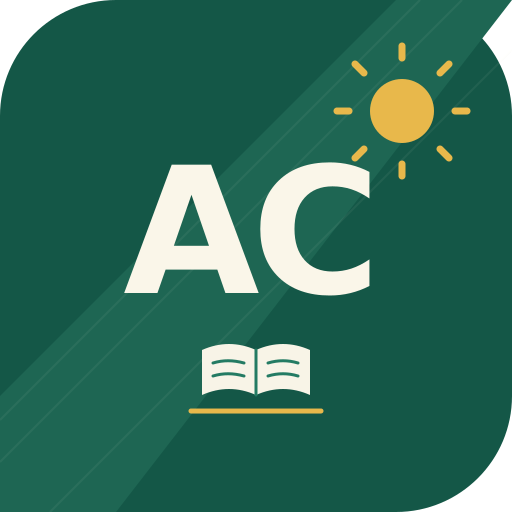

Know who's in the room.
Keep learner records, daily attendance, seating arrangements, and groups in one place.
Give the everyday work of teaching a place to belong. Your learners, attendance, grades, and lesson plans — together in one thoughtful workspace.
Katuwang mo sa bawat klase.
Move from the work before class to the details after it, with tools that stay together.
Keep learner records, daily attendance, seating arrangements, and groups in one place.
Organize assessments and scores. Review computed grades with your school's grading policy.
Plan the week, gather notes, and use classroom tools to bring your teaching day together.
Klasama keeps classroom records in your browser. Export a backup whenever you need to bring your work to another device.
Open your workspace ↗Create your local account and add your teacher, school, and class details.
Add your class list, record attendance, and organize the work ahead.
Export JSON backups regularly. Restore them when moving to another browser or device.
A few more tools. A little more time for what matters. Bring planning, assessment, and school paperwork into your teaching rhythm with Klasama Pro.
Online and AI tools need their own service settings and internet access.
Activate in Settings → License → I Have a License Key.

Klasama design & customization by Almara Creatives
Design, development & support